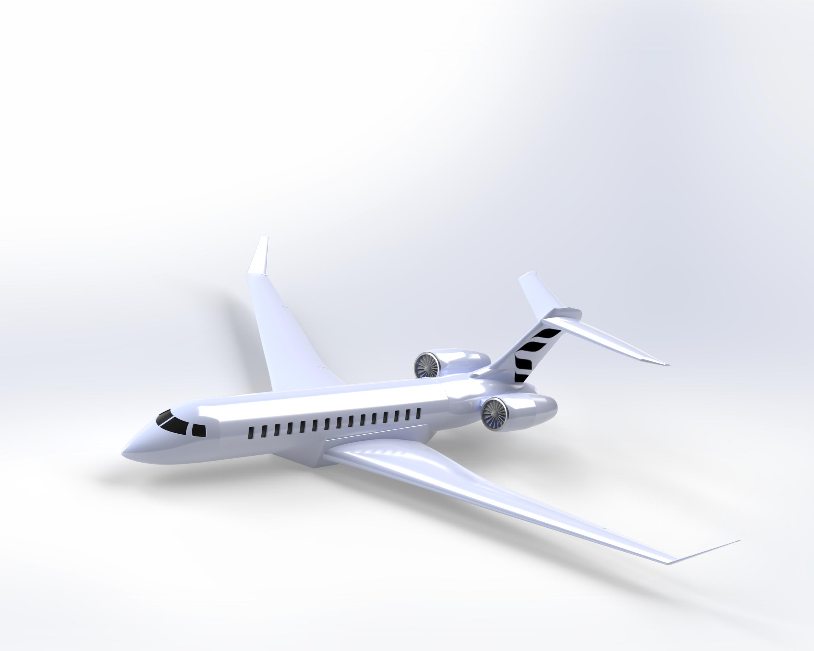

Mechanical & aerospace engineering
Inside an inline-four.
Explore how bore and stroke shape a two-litre engine. Compare two layouts, then follow the pistons and crankshaft through a full revolution.
INLINE-FOUR CUTAWAY · GEOMETRY MODEL
PistonsConnecting rodsCrankshaft
Engine concept study
Same displacement, shorter travel.
Increasing the bore from 86 to 90 mm offsets the shorter 78.5 mm stroke. Both layouts displace about 2.0 L. At 6,000 rpm, the shorter stroke lowers mean piston speed from 17.20 to 15.70 m/s, about 9%.
Bore
The diameter of each cylinder. A larger bore increases the area swept by each piston.
Stroke
The distance a piston travels between its highest and lowest points. It is twice the crank throw.
Model scope
This educational model calculates geometry and motion from assumed dimensions. Power, durability and operating limits require separate analysis and validation.
How the bore would be inspected
The example drawing specifies 86.000 ± 0.020 mm. With a 0.005 mm guard band, 86.010 mm falls inside the acceptance range. A reading of 86.027 mm triggers a hold for review. Repeat the measurement at multiple depths and orientations to check for taper, ovality or measurement error before investigating the machining process. Both readings are synthetic.
Read the calculations and assumptions
McGill University · AERO 520 · Winter 2026
Designing a long-range business jet
Our four-person team designed a business jet concept for eight passengers and three crew, with an 8,000-nautical-mile range requirement. I developed the aircraft CAD and carried out the weight and balance, flight performance, and stability and control analyses.
Weight and balance
I estimated component weights in Advanced Aircraft Analysis (AAA) and plotted how the centre of gravity shifted with loading. The component-based estimate of empty weight was 52,613 lb, 11.1% below the initial 59,211 lb estimate.
Runway performance
At maximum takeoff weight, sea level and standard temperature, I estimated a balanced field length of 4,910 ft against the 6,000 ft requirement. I also evaluated the effect of airport elevation and temperature.
1,090 ft below the field-length limit under the modelled conditions
Stability and control
I examined static margin and trim in takeoff, cruise and landing configurations. In cruise, the calculated pitching-moment slope was negative, indicating a restoring pitching moment after a small increase in angle of attack.

SolidWorks assembly
Bombardier Global 8000
This reference model by ChinedumE7 brings together a lofted fuselage, wing and control-surface variants, empennage, and GE Passport-inspired nacelle and fan geometry. The fan rotation study illustrates engine motion. Original model and author.
Download the SolidWorks assemblyResearch internship · McGill and ÉTS
Electric UAV and cave-mapping hardware
At McGill Aerospace Research, I supported an electric-propulsion UAV with SolidWorks, AutoCAD, MATLAB and Simulink. I tested Pixhawk firmware and used PX4 and QGroundControl for sensor monitoring and system checks.
Working with ÉTS Lab INIT Robots, I helped develop a Jetson Orin Nano ground station, wrote Python automation, and prototyped waterproof packaging and internal hardware layouts for cave mapping.